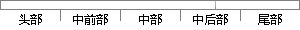

：码元距离， 即 两个码组中对应码位上码元不同的个数，也称汉明 距 。码距反映的是码组之间的差异程度，
片段位置图

相似结果
相似片段：
监督元,组成长为n的码字在二进制情况下,共有2k个不同的信息组,相应地可得到2k个不同的码字,称为许用码组其余2n-2k个码字未被选用,称为禁用码组所谓码元距离就是两个码组中对应码位上码元不同的个数(也称汉明距离)码距反映的是码组之间的差异程度最小码距——码组种任意两个码字之间距离的最小值即称为最小码距,用d0表示最小码距是码的一个重要参数,它是衡量码检错、纠错能力的依据 2.公司
| 对比库： | WriteCheck云资源库 |
| 来源： | myhostlist.com 查看来源 |
| 发布时间： | 2013-01-16 |
| 相似率 | 100% （严重抄袭） |